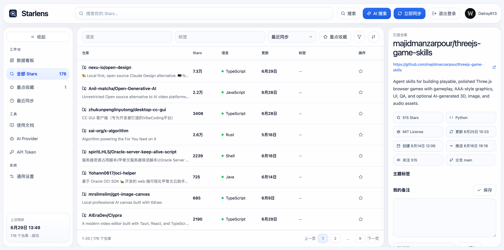

收藏了上千个，想用时却一个都想不起
记得它是一个 React 表格、Agent 框架，就是想不起仓库名。
过几天再回头，很难回忆为什么收藏了这个项目。
Stars 躺在浏览器里，开发工具无法直接调用你的知识。
根据你收藏的仓库，chromadb/chroma 和 run-llama/llama_index 最适合本地 RAG 原型：都支持本地嵌入 + 向量检索，社区活跃。
↳ 调用工具 starlens_search → starlens_tag
查询: "CLI" · 语言: Rust · 打标签: "rust-cli"
已为收藏里 3 个 Rust 命令行工具打上 rust-cli 标签：
